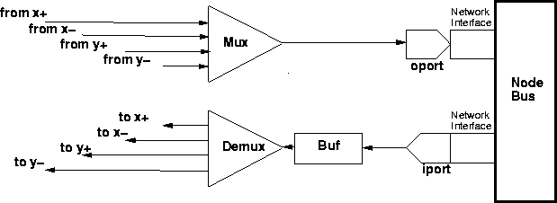

Source files: src/MemSys/net.c, src/MemSys/mesh.c
Header files: incl/MemSys/simsys.h, incl/MemSys/net.h
The base network provided in the RSIM distribution is a 2-dimensional bi-directional mesh (without wraparound connections), and is taken from the NETSIM simulation system [7]. The interconnection network includes separate request and reply networks for deadlock-avoidance. Unlike the other subsystems discussed in this chapter, the network is not built using the standard module framework.
The network flit delay, arbitration delay, width, and buffer sizes can be configured as described in Chapter 4. Additionally, the system can be directed to simulate pipelined switches, by which the flit delay of multiple flits can be incurred in a pipelined manner. To model this behavior, a system with pipelined switches uses a flit delay equal to the granularity of pipelining and adds the remainder of the originally specified flit delay to the arbitration delay of the multiplexers. With these adjustments, the latency of the head flit of a packet remains the same, but subsequent flit delays are based on the degree of pipelining.
The processor connection to the network of each node is depicted in Figure 15.1. Similar components connect the node to the interconnection network and neighboring processors along the X and Y axes. Messages are injected into the network using the SmnetSend event and are received from the interconnection network using the ReqRcvSemaWait and ReplyRcvSemaWait events, corresponding to the request and reply networks, respectively.

Figure 15.1: Processor side 2D-mesh switch connection.
The network routes packets using dimension-ordered routing, and each switch provides wormhole routing. At each buffer, port, multiplexor or demultiplexor, the packet's head flit determines its next destination in the network. When moving from one buffer to the next, the head flit encounters a delay of flitdelay cycles, which corresponds to the flit latency, possibly adjusted for pipelining as described above. In addition, the head flit consumes arbitration delays (possibly adjusted for pipelining) at each multiplexor. (NETSIM allows the head flit to experience routing delays at demultiplexors, but RSIM does not currently use this feature; these delays are set to 0.) A packet's remaining flits are moved when the tail flit is allowed to move. A tail flit is allowed to move in the network as long as it does not share a buffer with the head flit since the tail is never allowed to overtake the head of a packet. Once the tail is allowed to move, the simulator moves all intermediate flits in a pipelined fashion every flitdelay cycles until the tail flit itself moves. The various flits in the packet may thus span several network buffers at any time. This tail movement process continues until the packet has reached the destination output port or until the tail has caught up with its head flit.
The NETSIM reference manual is recommended reading for anyone intending to add other interconnection network types or policies [7]. RSIM supports all of the primary functions in NETSIM.